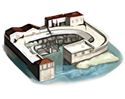
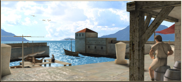
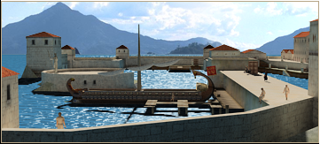

RTR: Imperium Surrectum
RTR: Imperium SurrectumTrade Port chain
3 levels, each replacing the one before it — you upgrade in place rather than building alongside.
Trade Port → Shipwright → Dockyard
Pictures are the game's own building art. Where a culture ships none of its own, the game falls back to another culture's, and that is what is shown here.
Levels at a glance
| Level | Cost | Build time | Minimum settlement | Upgrades to | Level | Cost | Build time | Minimum settlement | Upgrades to | ||
|---|---|---|---|---|---|---|---|---|---|---|---|
 | Trade Port | 2,500 | 4 | town | Shipwright | Shipwright | 6,000 | 6 | city | Dockyard | |
| Dockyard | 12,500 | 10 | large city | — |
Costs in denarii, build time in turns.
Shipwright

A shipwright can build the warships needed for a strong fleet, while the improved port facilities allow more goods to be landed at and forwarded from the settlement.
As a port grows wealth flows into the town, and all manner of goods become available to the people.
Militarily, the improvements in ship-building usually lead to better ship-handling and tactics.
Wording varies by culture: 3 versions of this description exist in the game files.
| Cost | 6,000 denarii | Build time | 6 turns | Minimum settlement | city | Upgrades to | Dockyard |
What it does
Show 19 effects that apply only in the circumstances shown
- trade fleet of 2 — only when
disabling_in_winter and is_player or homeland or hidden_resource capital - trade fleet of 1 — only when
not is_player and not homeland and not hidden_resource capital - -2 trade income — only when
disabling_in_winter and hidden_resource rhodes factionwide and is_player - -15 taxable income — only when
disabling_in_winter and is_player and not resource timber and not resource pitch and not resource hemp - -8 taxable income — only when
disabling_in_winter and is_player and not resource timber and resource pitch and not resource hemp - -8 taxable income — only when
disabling_in_winter and is_player and not resource timber and not resource pitch and resource hemp - -8 taxable income — only when
disabling_in_winter and is_player and resource timber and not resource pitch and not resource hemp - -8 taxable income — only when
disabling_in_winter and is_player and not resource timber and resource pitch and resource hemp - -8 taxable income — only when
disabling_in_winter and is_player and resource timber and resource pitch and not resource hemp - -8 taxable income — only when
disabling_in_winter and is_player and resource timber and not resource pitch and resource hemp - -8 taxable income — only when
disabling_in_winter and is_player and resource timber and resource pitch and resource hemp - improves other weapons (1) — only when
timber_building_supply and not hemp_building_supply and not pitch_building_supply - improves other weapons (1) — only when
not timber_building_supply and not hemp_building_supply and pitch_building_supply - improves other weapons (1) — only when
not timber_building_supply and hemp_building_supply and not pitch_building_supply - improves other weapons (2) — only when
timber_building_supply and hemp_building_supply and not pitch_building_supply - improves other weapons (2) — only when
timber_building_supply and pitch_building_supply and not hemp_building_supply - improves other weapons (2) — only when
hemp_building_supply and pitch_building_supply and not timber_building_supply - improves other weapons (2) — only when
hemp_building_supply and pitch_building_supply and timber_building_supply - +1 population growth — only when
disabling_in_winter and resource fish
Recruitment — unlocks 5 units. Which of them you can actually raise depends on your faction, your government and the region, exactly as the game files state it.
- Biremes (3 experience)
- Boats (3 experience)
- Large Boats (3 experience)
- Quinquiremes (3 experience)
- Triremes (3 experience)
Trade Port

A port brings trade and wealth to a settlement, and allows the construction of simple ships. Access to the sea is vital for all long distance trade. The sea lanes are the true highways of the world, and carrying goods by ship is the only way to move them cheaply enough to make a profit. Indeed, it is usually cheaper and quicker to send a cargo halfway across the world by sea than to the next city in a cart!
Militarily, ports are important because they have the men and equipment needed to build a fleet.
Wording varies by culture: 3 versions of this description exist in the game files.
| Cost | 2,500 denarii | Build time | 4 turns | Minimum settlement | town | Upgrades to | Shipwright |
What it does
Show 12 effects that apply only in the circumstances shown
- trade fleet of 1 — only when
disabling_in_winter - -1 trade income — only when
disabling_in_winter and hidden_resource rhodes factionwide and is_player - -10 taxable income — only when
disabling_in_winter and is_player and not resource timber and not resource pitch and not resource hemp - -5 taxable income — only when
disabling_in_winter and is_player and not resource timber and resource pitch and not resource hemp - -5 taxable income — only when
disabling_in_winter and is_player and not resource timber and not resource pitch and resource hemp - -5 taxable income — only when
disabling_in_winter and is_player and resource timber and not resource pitch and not resource hemp - -5 taxable income — only when
disabling_in_winter and is_player and not resource timber and resource pitch and resource hemp - -5 taxable income — only when
disabling_in_winter and is_player and resource timber and resource pitch and not resource hemp - -5 taxable income — only when
disabling_in_winter and is_player and resource timber and not resource pitch and resource hemp - -5 taxable income — only when
disabling_in_winter and is_player and resource timber and resource pitch and resource hemp - improves other weapons (1) — only when
timber_building_supply or hemp_building_supply or pitch_building_supply - +1 population growth — only when
disabling_in_winter and resource fish
Recruitment — unlocks 4 units. Which of them you can actually raise depends on your faction, your government and the region, exactly as the game files state it.
- Biremes (3 experience)
- Boats (3 experience)
- Large Boats (3 experience)
- Triremes (3 experience)
Dockyard

A Dockyard has the equipment and skilled craftsmen needed to construct the largest and most advanced warships afloat, while the port can speedily handle many merchant vessels.
The city's merchants can easily send their cargoes to any port in the world, adding greatly to the wealth of the city and in return exotic goods from all over the world pass through the docks.
The Dockyard can produce any warship required by the fleet, and even provide the crews of slave rowers required by these large and powerful ships.
Wording varies by culture: 3 versions of this description exist in the game files.
| Cost | 12,500 denarii | Build time | 10 turns | Minimum settlement | large city |
What it does
Show 20 effects that apply only in the circumstances shown
- trade fleet of 3 — only when
disabling_in_winter and is_player or homeland or hidden_resource capital - trade fleet of 1 — only when
not is_player and not homeland and not hidden_resource capital - +5 trade income — only when
not is_player and not hidden_resource rhodes factionwide and not homeland and not hidden_resource capital - -2 trade income — only when
disabling_in_winter and hidden_resource rhodes factionwide and is_player - -20 taxable income — only when
disabling_in_winter and is_player and not resource timber and not resource pitch and not resource hemp - -12 taxable income — only when
disabling_in_winter and is_player and not resource timber and resource pitch and not resource hemp - -12 taxable income — only when
disabling_in_winter and is_player and not resource timber and not resource pitch and resource hemp - -12 taxable income — only when
disabling_in_winter and is_player and resource timber and not resource pitch and not resource hemp - -12 taxable income — only when
disabling_in_winter and is_player and not resource timber and resource pitch and resource hemp - -12 taxable income — only when
disabling_in_winter and is_player and resource timber and resource pitch and not resource hemp - -12 taxable income — only when
disabling_in_winter and is_player and resource timber and not resource pitch and resource hemp - -12 taxable income — only when
disabling_in_winter and is_player and resource timber and resource pitch and resource hemp - improves other weapons (1) — only when
timber_building_supply and not hemp_building_supply and not pitch_building_supply - improves other weapons (1) — only when
not timber_building_supply and not hemp_building_supply and pitch_building_supply - improves other weapons (1) — only when
not timber_building_supply and hemp_building_supply and not pitch_building_supply - improves other weapons (2) — only when
timber_building_supply and hemp_building_supply and not pitch_building_supply - improves other weapons (2) — only when
timber_building_supply and pitch_building_supply and not hemp_building_supply - improves other weapons (2) — only when
hemp_building_supply and pitch_building_supply and not timber_building_supply - improves other weapons (3) — only when
timber_building_supply and hemp_building_supply and pitch_building_supply - +1 population growth — only when
disabling_in_winter and resource fish
Recruitment — unlocks 5 units. Which of them you can actually raise depends on your faction, your government and the region, exactly as the game files state it.
- Biremes (3 experience)
- Boats (3 experience)
- Large Boats (3 experience)
- Quinquiremes (3 experience)
- Triremes (3 experience)
What the shorthands in those conditions stand for (6)
These are the mod's own, quoted from the game files unchanged.
| Shorthand | Stands for | Shorthand | Stands for | Shorthand | Stands for | Shorthand | Stands for |
|---|---|---|---|---|---|---|---|
disabling_in_winter | not_extreme_cold or not major_event "winter" | hemp_building_supply | resource hemp or hidden_resource hemp_supply_built factionwide | homeland | any one of 221 alternatives — too long to quote here | not_extreme_cold | not hidden_resource sub_artic and not hidden_resource alpine |
pitch_building_supply | resource pitch or hidden_resource pitch_supply_built factionwide | timber_building_supply | resource timber or hidden_resource timber_supply_built factionwide |